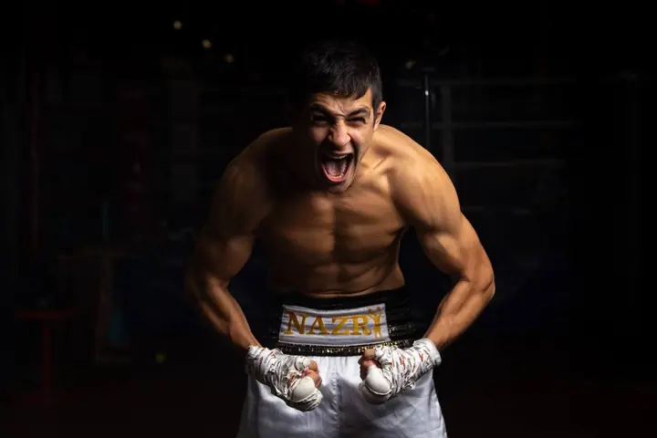
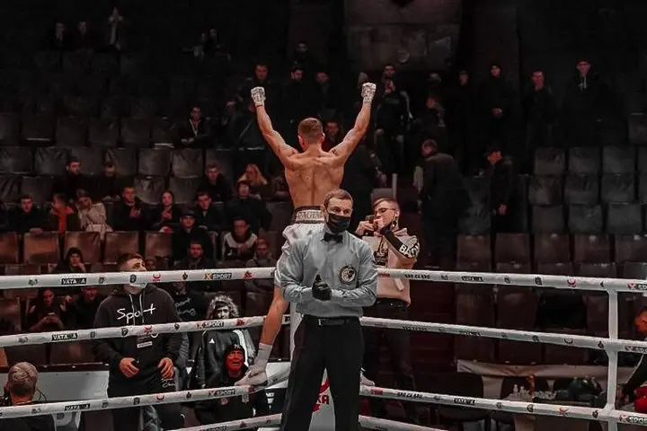
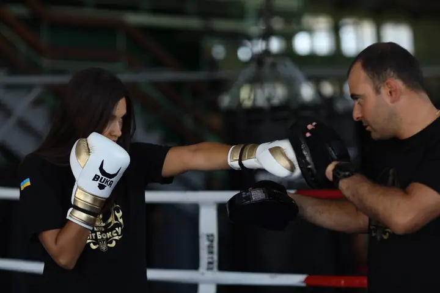
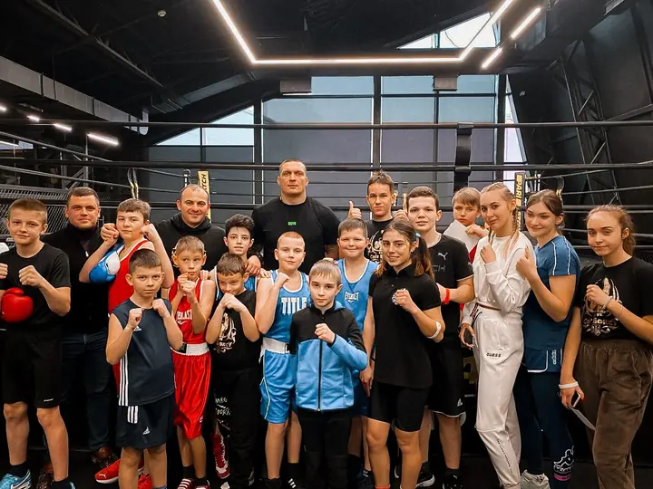

Світ Боксу
Світ Боксу — боксерський клуб у Броварах з 2012 року: діти від 6 років, дівчата, чоловіки, індивідуальні тренування, професійні бійці. Стиль — чорний ринг, білі канати, один червоний удар. Система однакова для сайту, соцмереж, афіш і відео: хто б не робив макет, він має виглядати так, ніби його зробив клуб.
Пʼять правил
- Колір живе у фото і в червоному. Інтерфейс —
bg,fg,muted,line. Червоний — лише для дії, номера раунду, верхнього каната, одного акценту на кадр. - Заголовок — як удар.
display900 курсивом, великими літерами, щільно (міжрядковий .85–.9), без розрядки. Коротко: до 6 слів. - Ринг квадратний.
radius-0скрізь. Межі 1pxlineзамість тіней; тінь — лише для речей, що «висять» (shadow-lift). - Рахуємо раундами. Секції, кроки, слайди — «Раунд 01, 02…». Табличка раунду і канати — фірмові знаки.
- Тільки справжнє. Свої фото, справжні відгуки дослівно, справжні імена й титули. Немає даних — не публікуємо.
Тон голосу
- Мова — українська. Сайт, документи й відповіді батькам — на «ви» («вас тренуватиме…», «ваш графік»). У соцмережах можна на «ти» («Твій перший раунд»). В одному тексті не змішувати.
- Пишемо як тренер: коротко, прямо, по-доброму. Факт замість епітета: «Перші місяці без спарингів» замість «Максимально безпечно!».
- Боксерські слова доречні: раунд, ринг, кут, гонг, лапи, спаринг. Не більше одного «бойового» образу в тексті.
- Без знаків оклику в заголовках, без капслоку в абзацах, без емодзі в макетах (у підписах до постів — 1–2 максимум).
- Приклади з сайту: «Бокс у Броварах — характер гартується в рингу», «Дисципліна · Праця · Результат», «Стань кращою версією себе».
- Дати й контакти — моно, великими: «БРОВАРИ · +38 073 721 71 71».
Колір
- Тло завжди
bg(#050505), панелі —surface,surface-raised. - Текст
fg, другоряднийmuted. Обидва проходять 4.5:1 на всіх темних тлах. red— акцент і текст на чорному. Під білим текстом дрібніше 24px — тількиred-deep.gold— лише пояси й медалі,star— лише зірки Google,live— лише «зараз тренування». Ці три ніколи не стають кнопками.- Друк:
red≈ C0 M90 Y75 K0,bg— насичений чорний C60 M40 Y40 K100. Перед тиражем — проба.
#050505Тло всього: сайт, пости, сторіс, афіші. Майже чорний, не чистий #000.
#0e0e0dПанелі поверх тла: банер cookie, картки, поля форми.
#121211Друга сходинка панелей: таблиця розкладу, підкладка під фото.
rgba(244,244,242,.16)Тонкі лінії 1px між рядками і секціями. Межі замість тіней.
#f4f4f2Основний текст і заголовки на bg, surface, red-deep (4.6:1). Також заливка головної кнопки.
#a3a39eДругорядний текст на bg і surface (8:1): описи, підписи, примітки.
#ff2936Фірмовий червоний: верхній канат, номер раунду, квадрат-маркер, наведення. Текстом — лише на bg (5.5:1). Білий текст на ньому дрібніше 24px не ставити (3.4:1): для заливок з текстом — red-deep.
#d6202dЧервоні блоки з текстом: «чесна відповідь», цитата з відгуку, тло посту-цитати. fg на ньому 4.6:1, bg на ньому — для акцентних лапок.
#e8e8e4Білі канати рингу (2-й і 3-й), стрічка-бинт. Під першим канатом завжди red.
#d6a640Лише чемпіонський пояс, медаль, дзвін раунду. Не для кнопок і тексту.
#f4b400Лише зірки рейтингу Google біля відгуків.
#3ddc84Лише індикатор «зараз тренування» (крапка, що пульсує). Завжди з підписом словами.
#ff8a92Службовий: позначає незаповнені дані в чернетках. На публікаціях не буває.
Шрифти
Усі чотири — Google Fonts, безкоштовні й з кирилицею.
| Роль | Шрифт | Де |
|---|---|---|
display |
Fira Sans Extra Condensed 800/900 Italic | заголовки, цифри, стрічка |
serif |
Lora 400 / Italic | підзаголовки, відповіді, цитати |
sans |
IBM Plex Sans 400–600 | основний текст |
mono |
IBM Plex Mono 400/500 | мітки, кнопки, дати, телефон — завжди великими |
- Курсив
serif— для другої, емоційної половини фрази: «Бокс у Броварах — характер гартується в рингу». - Не змішувати з іншими шрифтами. Не використовувати
displayдля абзаців.
Назва клубу на заставці, обкладинці, афіші. Завжди великими літерами.
Заголовок секції сайту (clamp 52–128px), головне слово посту.
Питання або цитата в червоному блоці (clamp 48–108px).
Назва програми в рядку списку (clamp 40–84px).
Цифри: таймер раунду, ціна, рахунок. Табличні цифри.
Стрічка-бинт і біжучий рядок (clamp 22–34px).
Підзаголовок під великим заголовком (clamp 22–34px); друга частина фрази — курсивом.
Відповідь у червоному блоці, лід статті (clamp 18–22px).
Довгі тексти: політики, статті, FAQ.
Основний текст сайту, описи в картках.
Кнопки й посилання-дії. Великими літерами.
Мітки секцій, телефон, дата, підписи до фото. Великими літерами.
Тег на плашці, дрібні примітки по краях макета.
Логотип
- Знак — монограма «СБ» на чорному квадраті з двома канатами внизу (
assets/Logos/svitbox-mark.svg). Ставиться в кут макета, 8–12% ширини. - Назва «СВІТ БОКСУ» набирається шрифтом
display900 курсивом — окремого файлу словесного знака поки немає. - Охоронне поле — половина ширини знака. Не перефарбовувати, не обводити, не класти на строкатий фон без чорної підкладки.
Фото
- Тільки фото клубу. Обробка одна для всього: чорно-біле, контраст +18%, яскравість −12%, зерно. Колір — лише як реакція (наведення на сайті, відео).
- Під текстом фото темніше (яскравість .5–.6) і йде градієнтом у
bg. - Сюжети: емоція крупно (обличчя, рукавиця, піт), рух (удар, лапи), команда й нагороди. Діти — тільки з дозволу батьків.
- Не можна: червоний дуотон (люди виходять «демонами»), кольорові фільтри, сток, якщо є свій кадр.
Сітка і відступи
- Сайт: контейнер до 1440px, поля
space-3…4vw, секціїspace-7–space-9по вертикалі. - Соцмережі: поле 6.6% ширини (72px на 1080). Вгорі — мітка раунду і знак, знизу — заголовок і контакт.
- Сторіс: верхні 8% і нижні 14% без тексту.
- Афіша: поле 6%, виліт 3 мм.
Рух
- Три швидкості: швидко 0.22s (колір, прозорість), база 0.35s (кнопки, зсуви), повільно 0.6s (фото, появи).
- Криві:
cubic-bezier(.2,.8,.2,1)— вихід,cubic-bezier(.7,0,.2,1)— туди-назад. - Характер руху — удар і відскок: швидкий старт, мʼяка зупинка. Канати хитаються, табличка раунду «йде» рингом.
- Для відео й сторіс: склейки під гонг, 3 секунди на кадр, титри появою знизу.
- Поважати «зменшити рух»: без анімацій, лише зміна кольору.
Доступність
- Текст 4.5:1 мінімум, великий (24px+) — 3:1. Перевірені пари:
fg/bg,muted/bg,red/bg,fg/red-deep. - Фокус — обвідка 2px
redз відступом 3px. - Колір ніколи не несе сенс сам: «зараз тренування» — крапка
liveі слова.
Компоненти
Готові елементи сайту. Наведіть курсор на кнопку, фото і рядок програми — так вони поводяться на сайті.
Кнопка
Головна дія: біла плита з моно-написом, при наведенні знизу піднімається червона заливка.
- Коли: одна головна дія на екран або макет — «Записатись», «Подзвонити». Друга дія — текстове посилання
sb-link(моно, підкреслення 1px). - Що дати: текст дії (дієслово, 1–2 слова) і стрілку
→окремим<span>. - Розміри: висота
control-h(58px) на сайті, мінімум 44px на телефоні; поля 30px; кутиradius-0. - Кольори:
fgтло +bgтекст; наведення —red-deep+fg(4.6:1). Фокус — обвідка 2pxredз відступом 3px. - Не можна: заокруглювати, робити червону кнопку в спокої, ставити дві плити поруч.
- На сайті зараз наведення залите
red(3.4:1 з білим 14px) — система фіксуєred-deep; сайт підтягнемо.
Мітка раунду і теги
Мітка секції «Раунд 01 · Програми» і теги-плашки: так клуб нумерує все — секції, кроки, слайди каруселі.
- Коли: над кожним великим заголовком; у кутку посту; номери кроків («Раунд 01» = крок 1).
- Що дати: номер (
n, двозначний: 01, 02) і назву. Номер —red, назва —muted, стильmono-label. - Теги:
sb-tag— моно 11px наbg;.lightна червоному тлі;.red(red-deep) для «Новий набір», «Профі». - Не можна: «Крок 1», «Секція 1» — тільки раунди; більше 12 раундів (у боксі їх 12).
Канати
Три канати рингу — головний графічний знак клубу: верхній red, два нижні rope.
- Коли: межа між фото і текстом, верх футера, низ сторіс, лінія через афішу. Канати йдуть на всю ширину, від краю до краю.
- Розміри: товщина
rope-h(5px на сайті; ≈0.55% ширини макета в соцмережах), зазор 14px (≈1.3%), тверда тіньshadow-rope. - Не можна: міняти порядок кольорів, робити 2 або 4 канати, скошувати, обривати посередині.
Стрічка-бинт
Стрічка-бинт: біла смуга з червоними краями і девізом клубу, лежить навскіс поперек сторінки.
- Коли: раз на сторінку або макет — як розділювач між великими блоками; на банері заходу.
- Що дати: слова девізу: «Дисципліна · Праця · Результат · Стань кращою версією себе · Світ Боксу · Бровари». Роздільник — червоний ромб 12px.
- Розміри: нахил −1.6° (або +1.6° для другої), ширина 104% (виходить за краї), рамки 4px
red, тіньshadow-tape, текстdisplay-tape. - Не можна: більше двох стрічок поруч; інший текст, крім девізу і назви клубу.
Біжучий рядок
Біжучий рядок цінностей: великі слова курсивом, кожне друге — контуром, між ними червоний квадрат.
- Коли: на сайті між секціями; у відео й сторіс — як рухомий фон низу.
- Що дати: 4–6 слів-цінностей одним словом кожне.
- Стиль:
display800, 34–64px; контур — обведення 1pxfg, без заливки.
Табличка раунду
Табличка раунду, яку виносять між раундами: біла дошка, червона рамка, велика червона цифра, на жердині.
- Коли: номер раунду в анонсі турніру, сторінка 404, відлік днів («за 03 дні»), нумерація карток у каруселі.
- Що дати: верхнє слово (
Раунд), велику цифру/коротке слово (до 3 знаків), підпис за бажанням. - Розміри: ширина 180–280px, дошка 4:3, рамка 6px
red+ біле кільце 3px, тіньshadow-lift. Цифра —display900 уred-deepнаfg. - Не можна: малювати дівчат-ринг-герлз або людей — лише табличку.
Фото


Фото клубу: чорно-біле з контрастом і зерном, при наведенні повертається природний колір.
- Обробка: CSS
filter: grayscale(1) contrast(1.18) brightness(.88); наведення —grayscale(0) contrast(1.05) brightness(1), перехід 0.6s. Зерно — шум SVG поверх, 14% overlay. - Під текстом: яскравість .48–.62 і градієнт до
bgзнизу, щоб білий текст читався. - Для соцмереж і друку той самий рецепт у Lightroom: чорно-біле, контраст +30, експозиція −0.3, зерно 25/розмір 25, тіні глибокі, без віньєтки.
- Кадр: кути
radius-0, без рамок і тіней; підпис —mono-microв лівому нижньому куті. - Не можна: червоне тонування (дуотон) — обличчя виходять «демонічними»; кольорові фільтри; стокові фото, якщо є свої.
Червоний блок
«Бокс — це небезпечно для дитини?»
Перші місяці діти не б'ються в спаринг. Вчимо стійку, пересування, захист — і лише потім контакт, у шоломі та під наглядом тренера.
Більше про дитячі групи →Червоний блок, що розриває чорну сторінку: велике питання або цитата зліва, чесна відповідь справа.
- Коли: не частіше одного на екран — страх або заперечення («Бокс — це небезпечно?») чи справжній відгук.
- Що дати: питання/цитату в лапках «», тег (
Чесна відповідь), 1–2 абзаци відповіді, посилання. - Кольори: тло
red-deep, текстfg(4.6:1), лапки і підкреслення посилання —bg. Питанняdisplay-statement, відповідьserif-lead. - Не можна: вигадані відгуки; тло
redпід дрібним текстом; дві червоні секції підряд.
Рядок програми
Від 6 років. Координація, дисципліна, впевненість.
→Окремі групи. Форма, техніка, самозахист.
→Від нуля до спарингів.
→Рядок програми: велика назва курсивом, опис, квадратна стрілка; при наведенні назва їде вправо і червоніє.
- Коли: списки програм, груп, заходів — замість карток.
- Що дати: назву 1–2 слова, опис до 60 символів, посилання.
- Стиль: назва
display-row, описbodyуmuted, межіline; стрілка в квадраті 56px, при наведенні — біла і повернута на −45°.
Відгук
«Кращий клуб боксу в Броварах в першу чергу для дітей»a.khilskiy · відгук у Google
Цитата відгуку: зірки Google, текст засічками, автор моно.
- Що дати: справжній відгук дослівно (скорочення — […]), імʼя як у Google, джерело.
- Кольори: зірки — лише
star; текстserif22pxfg; авторmono-labelmuted. - Не можна: редагувати слова автора, вигадувати відгуки, ставити 5 зірок, якщо відгук мав менше.
Соцмережі і друк
Шаблони постів, сторіс і афіші. Поля в [дужках] заміняємо справжніми даними.
Пости 1:1 і 4:5

Дівчата.
Новий набір
Бровари · +38 073 721 71 71
[Імʼя]
[Прізвище]
характер гартується в рингу
«Кращий клуб боксу в Броварах в першу чергу для дітей»
a.khilskiy · Google
Шаблони постів для Instagram і Facebook: анонс 1:1, результат бою 4:5, цитата з відгуку 4:5.
red) і знак клубу; знизу великий заголовокdisplay900 курсивом 2 рядки; під ним моно-рядок з контактом або датою. Фото — ч/б з градієнтом доbgзнизу; канати перетинають кадр.Сторіс 9:16
Тиждень
Вболівай
за наших
Шаблони сторіс 9:16: розклад тижня і анонс турніру з табличкою раунду.
Афіша A4 / A3

Світ Боксу
Бокс у Броварах — характер гартується в рингу
Афіша A4/A3 для залу, школи, під'їзду: фото команди, канати, назва, програми, телефон, QR на запис.
red≈ C0 M90 Y75 K0, перевірити пробою.display-hero, підзаголовокserif, теги програм, телефон великими цифрами і QR (мін. 20×20 мм, веде на форму запису).